CODING AGENTS AS PIXEL WORLD MODELS
traex/DeepSeek-V4.1-Flash · 0193
点击播放 · 原生 RGB 像素
逐轮保存的候选
回放视频、检查图与代码变化。
每份候选均可单独播放。实际图片检查记录在下方工具轨迹中。
候选 01播放与检查图
点击播放 · 原生 RGB 像素

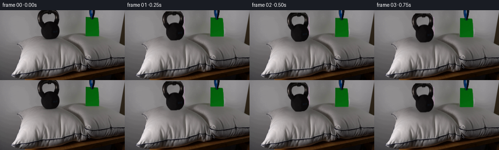
展开代码变化
--- 上一保存版本
+++ 本次保存版本
@@ -0,0 +1,273 @@
+from pathlib import Path
+
+import cv2
+import numpy as np
+from PIL import Image
+
+import artifact_io
+
+
+WIDTH = 256
+HEIGHT = 144
+FRAME_COUNT = 20
+FPS = 4
+
+
+def smoothstep(edge0, edge1, value):
+ x = np.clip((value - edge0) / (edge1 - edge0), 0.0, 1.0)
+ return x * x * (3.0 - 2.0 * x)
+
+
+def grab_object(rgb, rect, min_area):
+ bgr = cv2.cvtColor(rgb, cv2.COLOR_RGB2BGR)
+ mask = np.zeros((HEIGHT, WIDTH), np.uint8)
+ bg_model = np.zeros((1, 65), np.float64)
+ fg_model = np.zeros((1, 65), np.float64)
+ cv2.grabCut(
+ bgr,
+ mask,
+ rect,
+ bg_model,
+ fg_model,
+ 8,
+ cv2.GC_INIT_WITH_RECT,
+ )
+ binary = ((mask == cv2.GC_FGD) | (mask == cv2.GC_PR_FGD)).astype(np.uint8)
+ count, labels, stats, _ = cv2.connectedComponentsWithStats(binary, 8)
+ cleaned = np.zeros_like(binary)
+ for index in range(1, count):
+ if stats[index, cv2.CC_STAT_AREA] >= min_area:
+ cleaned[labels == index] = 1
+ return cleaned
+
+
+def build_background(rgb, objects):
+ union = np.maximum.reduce(objects)
+ removal = cv2.dilate(union, np.ones((5, 5), np.uint8), iterations=1)
+
+ # Extend removal through the contact shadows so no dark halo remains.
+ yy, xx = np.mgrid[0:HEIGHT, 0:WIDTH]
+ kettle_shadow = (
+ ((xx - 99.0) / 29.0) ** 2 + ((yy - 61.0) / 11.0) ** 2 < 1.0
+ )
+ paper_shadow = (
+ ((xx - 190.0) / 22.0) ** 2 + ((yy - 54.0) / 8.0) ** 2 < 1.0
+ )
+ removal = np.maximum(
+ removal,
+ ((kettle_shadow | paper_shadow) & (yy >= 48)).astype(np.uint8),
+ )
+
+ inpainted_bgr = cv2.inpaint(
+ cv2.cvtColor(rgb, cv2.COLOR_RGB2BGR),
+ removal * 255,
+ 5,
+ cv2.INPAINT_TELEA,
+ )
+ inpainted = cv2.cvtColor(inpainted_bgr, cv2.COLOR_BGR2RGB).astype(np.float32)
+
+ background = rgb.astype(np.float32).copy()
+
+ # The wall is nearly a vertical gradient. Rebuild its hidden strip from
+ # same-row neighbors, retaining fine grain from unobstructed wall pixels.
+ wall_mask = (removal > 0) & (yy < 50)
+ for y in range(50):
+ known = np.flatnonzero(removal[y] == 0)
+ if known.size < 2:
+ continue
+ row = rgb[y].astype(np.float32)
+ interpolated = np.empty_like(row)
+ for channel in range(3):
+ interpolated[:, channel] = np.interp(
+ np.arange(WIDTH), known, row[known, channel]
+ )
+ smooth = np.empty(WIDTH, np.float32)
+ for channel in range(3):
+ smooth = np.convolve(row[:, channel], np.ones(9) / 9.0, mode="same")
+ if channel == 0:
+ smooth_rgb = np.empty((WIDTH, 3), np.float32)
+ smooth_rgb[:, channel] = smooth
+
+ source_x = np.where(
+ np.arange(WIDTH) < 150,
+ np.minimum(np.arange(WIDTH) + 52, WIDTH - 1),
+ np.minimum(np.arange(WIDTH) + 42, WIDTH - 1),
+ )
+ grain = row[source_x] - smooth_rgb[source_x]
+ reconstructed = interpolated + 0.82 * grain
+ background[y, wall_mask[y]] = np.clip(
+ reconstructed[wall_mask[y]], 0, 255
+ )
+
+ # The pillow is smooth enough for an image inpaint. Feather its perimeter
+ # into the original so untouched pixels remain exact.
+ pillow_mask = (removal > 0) & (yy >= 50)
+ feather = cv2.GaussianBlur(
+ pillow_mask.astype(np.float32), (0, 0), sigmaX=1.2, sigmaY=1.2
+ )
+ feather = np.clip(feather * 1.55, 0.0, 1.0)[..., None]
+ background = background * (1.0 - feather) + inpainted * feather
+ return np.clip(background, 0, 255)
+
+
+def settle_curve(frame):
+ # Two-stage compression: a quick placement followed by a small elastic
+ # recovery. The event is complete well before the one-second mark.
+ if frame == 0:
+ return 0.0
+ keys = np.array(
+ [
+ [0.00, 0.00],
+ [0.15, 0.18],
+ [0.40, 0.64],
+ [0.65, 0.94],
+ [0.82, 1.00],
+ [1.05, 0.95],
+ [1.35, 1.00],
+ [5.00, 1.00],
+ ],
+ dtype=np.float32,
+ )
+ time = frame / FPS
+ return float(np.interp(time, keys[:, 0], keys[:, 1]))
+
+
+def make_depth_fields(amount):
+ yy, xx = np.mgrid[0:HEIGHT, 0:WIDTH].astype(np.float32)
+
+ kettle = np.exp(
+ -0.5 * (((xx - 99.0) / 22.0) ** 2 + ((yy - 62.0) / 11.0) ** 2)
+ )
+ paper = np.exp(
+ -0.5 * (((xx - 190.0) / 17.0) ** 2 + ((yy - 54.0) / 7.5) ** 2)
+ )
+ below_surface = smoothstep(43.0, 57.0, yy)
+ pillow_depth = amount * below_surface * (5.2 * kettle + 1.25 * paper)
+
+ # A tiny upward response in the surrounding fill makes the depression read
+ # as pillow compression rather than a simple downward image shift.
+ rim = np.exp(
+ -0.5 * (((xx - 99.0) / 37.0) ** 2 + ((yy - 68.0) / 15.0) ** 2)
+ )
+ rim *= np.exp(-0.5 * (((xx - 99.0) / 20.0) ** 2 + ((yy - 62.0) / 9.0) ** 2))
+ pillow_depth -= amount * 0.32 * rim
+ return pillow_depth, kettle, paper
+
+
+def warp_image(image, displacement):
+ yy, xx = np.mgrid[0:HEIGHT, 0:WIDTH].astype(np.float32)
+ return cv2.remap(
+ image,
+ xx,
+ yy - displacement,
+ interpolation=cv2.INTER_LINEAR,
+ borderMode=cv2.BORDER_REFLECT_101,
+ )
+
+
+def composite_object(output, rgb, mask, shift):
+ yy, xx = np.mgrid[0:HEIGHT, 0:WIDTH].astype(np.float32)
+ warped_rgb = cv2.remap(
+ rgb,
+ xx,
+ yy - shift,
+ interpolation=cv2.INTER_LINEAR,
+ borderMode=cv2.BORDER_REFLECT_101,
+ )
+ alpha = cv2.GaussianBlur(mask.astype(np.float32), (3, 3), 0.55)
+ warped_alpha = cv2.remap(
+ alpha,
+ xx,
+ yy - shift,
+ interpolation=cv2.INTER_LINEAR,
+ borderMode=cv2.BORDER_CONSTANT,
+ borderValue=0,
+ )
+ warped_alpha = np.clip(warped_alpha * 1.12, 0.0, 1.0)[..., None]
+ return warped_rgb * warped_alpha + output * (1.0 - warped_alpha)
+
+
+def add_contact_shading(image, amount, kettle, paper):
+ yy, xx = np.mgrid[0:HEIGHT, 0:WIDTH].astype(np.float32)
+ kettle_shadow = np.exp(
+ -0.5 * (((xx - 99.0) / 26.0) ** 2 + ((yy - 62.5) / 8.5) ** 2)
+ )
+ paper_shadow = np.exp(
+ -0.5 * (((xx - 190.0) / 21.0) ** 2 + ((yy - 54.5) / 6.0) ** 2)
+ )
+ shade = 1.0 - amount * (0.25 * kettle_shadow + 0.075 * paper_shadow)
+
+ # The bottom of the pillow takes the strongest occlusion near the contact.
+ contact = amount * np.exp(
+ -0.5 * (((xx - 99.0) / 18.0) ** 2 + ((yy - 61.0) / 4.0) ** 2)
+ )
+ shade *= 1.0 - 0.10 * contact
+ return np.clip(image * shade[..., None], 0, 255)
+
+
+def render_frame(rgb, background, objects, frame):
+ if frame == 0:
+ return rgb.copy()
+
+ amount = settle_curve(frame)
+ pillow_depth, kettle_depth, paper_depth = make_depth_fields(amount)
+ rendered = warp_image(background, pillow_depth)
+
+ # Very light pillow-surface highlights around the compressed areas.
+ highlight = amount * (
+ 0.9 * np.roll(kettle_depth, -10, axis=1)
+ + 0.3 * np.roll(paper_depth, -7, axis=1)
+ )
+ highlight *= smoothstep(46.0, 54.0, np.mgrid[0:HEIGHT, 0:WIDTH][0])
+ rendered = np.clip(rendered + highlight[..., None] * 0.75, 0, 255)
+
+ rendered = add_contact_shading(rendered, amount, kettle_depth, paper_depth)
+
+ kettle_shift = 6.8 * amount
+ paper_shift = 2.15 * amount
+ rendered = composite_object(rendered, rgb, objects[0], kettle_shift)
+
+ # Keep the hanging string anchored above the frame while the sheet settles.
+ yy = np.mgrid[0:HEIGHT, 0:WIDTH][0].astype(np.float32)
+ paper_row_shift = paper_shift * smoothstep(5.0, 15.0, yy)
+ paper_warped = cv2.remap(
+ rgb,
+ np.mgrid[0:HEIGHT, 0:WIDTH][1].astype(np.float32),
+ yy - paper_row_shift,
+ interpolation=cv2.INTER_LINEAR,
+ borderMode=cv2.BORDER_REFLECT_101,
+ )
+ paper_alpha = cv2.GaussianBlur(objects[1].astype(np.float32), (3, 3), 0.55)
+ paper_alpha = cv2.remap(
+ paper_alpha,
+ np.mgrid[0:HEIGHT, 0:WIDTH][1].astype(np.float32),
+ yy - paper_row_shift,
+ interpolation=cv2.INTER_LINEAR,
+ borderMode=cv2.BORDER_CONSTANT,
+ borderValue=0,
+ )
+ paper_alpha = np.clip(paper_alpha * 1.12, 0.0, 1.0)[..., None]
+ rendered = paper_warped * paper_alpha + rendered * (1.0 - paper_alpha)
+ return np.clip(rendered, 0, 255).astype(np.uint8)
+
+
+def main():
+ case_dir = Path(__file__).resolve().parent
+ source = np.asarray(Image.open(case_dir / "first_frame.png").convert("RGB"))
+ if source.shape != (HEIGHT, WIDTH, 3):
+ raise ValueError(f"Unexpected first frame shape: {source.shape}")
+
+ kettle = grab_object(source, (68, 0, 62, 64), 18)
+ paper = grab_object(source, (168, 0, 42, 58), 18)
+ objects = [kettle, paper]
+ background = build_background(source, objects)
+
+ frames = np.stack(
+ [render_frame(source, background, objects, index) for index in range(FRAME_COUNT)]
+ )
+ frames[0] = source
+ artifact_io.save(frames, case_dir)
+
+
+if __name__ == "__main__":
+ main()
候选 02播放与检查图
点击播放 · 原生 RGB 像素
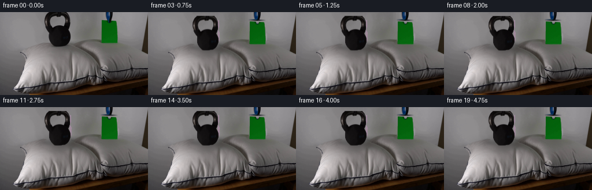
展开代码变化
--- 上一保存版本
+++ 本次保存版本
@@ -37,6 +37,21 @@
cleaned = np.zeros_like(binary)
for index in range(1, count):
if stats[index, cv2.CC_STAT_AREA] >= min_area:
+ cleaned[labels == index] = 1
+ return cleaned
+
+
+def paper_mask(rgb):
+ yy, xx = np.mgrid[0:HEIGHT, 0:WIDTH]
+ rgb16 = rgb.astype(np.int16)
+ green_excess = rgb16[:, :, 1] - np.maximum(rgb16[:, :, 0], rgb16[:, :, 2])
+ paper = (green_excess > 12) & (xx >= 174) & (xx <= 204) & (yy <= 54)
+ paper |= (green_excess > 18) & (xx >= 183) & (xx <= 190) & (yy < 15)
+ paper = cv2.morphologyEx(paper.astype(np.uint8), cv2.MORPH_CLOSE, np.ones((3, 3), np.uint8))
+ count, labels, stats, _ = cv2.connectedComponentsWithStats(paper, 8)
+ cleaned = np.zeros_like(paper)
+ for index in range(1, count):
+ if stats[index, cv2.CC_STAT_AREA] >= 20:
cleaned[labels == index] = 1
return cleaned
@@ -258,7 +273,7 @@
raise ValueError(f"Unexpected first frame shape: {source.shape}")
kettle = grab_object(source, (68, 0, 62, 64), 18)
- paper = grab_object(source, (168, 0, 42, 58), 18)
+ paper = paper_mask(source)
objects = [kettle, paper]
background = build_background(source, objects)
候选 03播放与检查图
点击播放 · 原生 RGB 像素
展开代码变化
--- 上一保存版本
+++ 本次保存版本
@@ -45,9 +45,16 @@
yy, xx = np.mgrid[0:HEIGHT, 0:WIDTH]
rgb16 = rgb.astype(np.int16)
green_excess = rgb16[:, :, 1] - np.maximum(rgb16[:, :, 0], rgb16[:, :, 2])
- paper = (green_excess > 12) & (xx >= 174) & (xx <= 204) & (yy <= 54)
+ paper = (green_excess > 12) & (xx >= 174) & (xx <= 204) & (yy <= 55)
paper |= (green_excess > 18) & (xx >= 183) & (xx <= 190) & (yy < 15)
- paper = cv2.morphologyEx(paper.astype(np.uint8), cv2.MORPH_CLOSE, np.ones((3, 3), np.uint8))
+ paper = cv2.morphologyEx(
+ paper.astype(np.uint8), cv2.MORPH_CLOSE, np.ones((3, 3), np.uint8)
+ )
+ # The paper's bottom edge includes a one-pixel green-to-pillow transition.
+ for x in range(175, 204):
+ edge = np.flatnonzero(paper[:, x])
+ if edge.size:
+ paper[edge.max() : min(edge.max() + 2, 56), x] = 1
count, labels, stats, _ = cv2.connectedComponentsWithStats(paper, 8)
cleaned = np.zeros_like(paper)
for index in range(1, count):
候选 04播放与检查图
点击播放 · 原生 RGB 像素
展开代码变化
--- 上一保存版本
+++ 本次保存版本
@@ -45,7 +45,7 @@
yy, xx = np.mgrid[0:HEIGHT, 0:WIDTH]
rgb16 = rgb.astype(np.int16)
green_excess = rgb16[:, :, 1] - np.maximum(rgb16[:, :, 0], rgb16[:, :, 2])
- paper = (green_excess > 12) & (xx >= 174) & (xx <= 204) & (yy <= 55)
+ paper = (green_excess > 12) & (xx >= 174) & (xx <= 204) & (yy <= 56)
paper |= (green_excess > 18) & (xx >= 183) & (xx <= 190) & (yy < 15)
paper = cv2.morphologyEx(
paper.astype(np.uint8), cv2.MORPH_CLOSE, np.ones((3, 3), np.uint8)
@@ -54,7 +54,7 @@
for x in range(175, 204):
edge = np.flatnonzero(paper[:, x])
if edge.size:
- paper[edge.max() : min(edge.max() + 2, 56), x] = 1
+ paper[edge.max() : min(edge.max() + 2, 58), x] = 1
count, labels, stats, _ = cv2.connectedComponentsWithStats(paper, 8)
cleaned = np.zeros_like(paper)
for index in range(1, count):
@@ -246,7 +246,7 @@
rendered = add_contact_shading(rendered, amount, kettle_depth, paper_depth)
kettle_shift = 6.8 * amount
- paper_shift = 2.15 * amount
+ paper_shift = 1.55 * amount
rendered = composite_object(rendered, rgb, objects[0], kettle_shift)
# Keep the hanging string anchored above the frame while the sheet settles.
@@ -259,7 +259,9 @@
interpolation=cv2.INTER_LINEAR,
borderMode=cv2.BORDER_REFLECT_101,
)
- paper_alpha = cv2.GaussianBlur(objects[1].astype(np.float32), (3, 3), 0.55)
+ # Use a firm paper edge; a blurred alpha would retain a green fringe from
+ # the original contact pixels.
+ paper_alpha = objects[1].astype(np.float32)
paper_alpha = cv2.remap(
paper_alpha,
np.mgrid[0:HEIGHT, 0:WIDTH][1].astype(np.float32),
候选 05播放与检查图
点击播放 · 原生 RGB 像素
展开代码变化
--- 上一保存版本
+++ 本次保存版本
@@ -60,6 +60,24 @@
for index in range(1, count):
if stats[index, cv2.CC_STAT_AREA] >= 20:
cleaned[labels == index] = 1
+ return cleaned
+
+
+def clean_paper_edges(rgb, mask):
+ cleaned = rgb.copy()
+ excess = (
+ rgb[:, :, 1].astype(np.int16)
+ - np.maximum(rgb[:, :, 0], rgb[:, :, 2]).astype(np.int16)
+ )
+ # The source's final anti-aliased contact row is mostly pillow, not paper.
+ for x in range(175, 204):
+ ys = np.flatnonzero(mask[:, x])
+ if ys.size:
+ y = int(ys.max())
+ if y >= 53:
+ amount = float(np.clip((excess[y, x] - 5.0) / 30.0, 0.0, 1.0))
+ if amount < 0.85:
+ cleaned[y, x] = (rgb[y - 2, x] * 0.7 + rgb[y + 2, x] * 0.3).astype(np.uint8)
return cleaned
@@ -283,11 +301,12 @@
kettle = grab_object(source, (68, 0, 62, 64), 18)
paper = paper_mask(source)
+ object_pixels = clean_paper_edges(source, paper)
objects = [kettle, paper]
background = build_background(source, objects)
frames = np.stack(
- [render_frame(source, background, objects, index) for index in range(FRAME_COUNT)]
+ [render_frame(object_pixels, background, objects, index) for index in range(FRAME_COUNT)]
)
frames[0] = source
artifact_io.save(frames, case_dir)
候选 06播放与检查图
点击播放 · 原生 RGB 像素
展开代码变化
--- 上一保存版本
+++ 本次保存版本
@@ -69,15 +69,19 @@
rgb[:, :, 1].astype(np.int16)
- np.maximum(rgb[:, :, 0], rgb[:, :, 2]).astype(np.int16)
)
- # The source's final anti-aliased contact row is mostly pillow, not paper.
+ # The source's lower anti-aliased rows are mostly pillow, not paper. Blend
+ # them toward the known pillow color so the moving sheet has no green rim.
for x in range(175, 204):
ys = np.flatnonzero(mask[:, x])
if ys.size:
y = int(ys.max())
if y >= 53:
- amount = float(np.clip((excess[y, x] - 5.0) / 30.0, 0.0, 1.0))
- if amount < 0.85:
- cleaned[y, x] = (rgb[y - 2, x] * 0.7 + rgb[y + 2, x] * 0.3).astype(np.uint8)
+ for row, strength in ((y - 1, 0.78), (y, 0.92)):
+ if row >= 0:
+ pillow = rgb[min(row + 2, HEIGHT - 1), x]
+ cleaned[row, x] = (
+ rgb[row, x] * (1.0 - strength) + pillow * strength
+ ).astype(np.uint8)
return cleaned
候选 07播放与检查图
点击播放 · 原生 RGB 像素

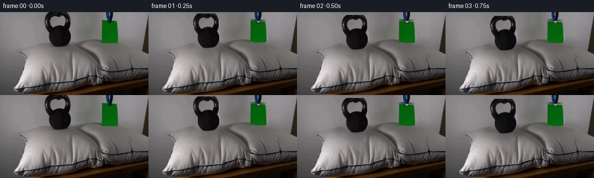
展开代码变化
--- 上一保存版本
+++ 本次保存版本
@@ -50,11 +50,14 @@
paper = cv2.morphologyEx(
paper.astype(np.uint8), cv2.MORPH_CLOSE, np.ones((3, 3), np.uint8)
)
- # The paper's bottom edge includes a one-pixel green-to-pillow transition.
+ # The paper's lower rows include a green-to-pillow transition. Keep one
+ # anti-aliased row only, then let the pillow show through cleanly.
for x in range(175, 204):
edge = np.flatnonzero(paper[:, x])
if edge.size:
- paper[edge.max() : min(edge.max() + 2, 58), x] = 1
+ paper[edge.max() : min(edge.max() + 1, 56), x] = 1
+ if edge.max() >= 53:
+ paper[max(0, edge.max() - 2) : edge.max() + 1, x] = 0
count, labels, stats, _ = cv2.connectedComponentsWithStats(paper, 8)
cleaned = np.zeros_like(paper)
for index in range(1, count):
候选 08播放与检查图
点击播放 · 原生 RGB 像素

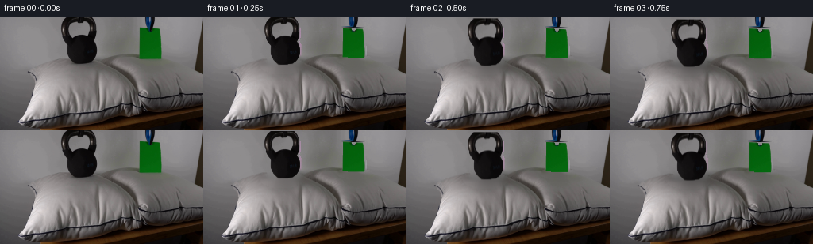
展开代码变化
--- 上一保存版本
+++ 本次保存版本
@@ -158,19 +158,20 @@
def settle_curve(frame):
- # Two-stage compression: a quick placement followed by a small elastic
- # recovery. The event is complete well before the one-second mark.
+ # Real-time placement: contact is made around half a second, followed by
+ # a small elastic pillow recovery.
if frame == 0:
return 0.0
keys = np.array(
[
[0.00, 0.00],
- [0.15, 0.18],
- [0.40, 0.64],
- [0.65, 0.94],
- [0.82, 1.00],
- [1.05, 0.95],
- [1.35, 1.00],
+ [0.15, 0.12],
+ [0.40, 0.46],
+ [0.65, 0.78],
+ [0.85, 0.97],
+ [1.05, 1.00],
+ [1.30, 0.96],
+ [1.65, 1.00],
[5.00, 1.00],
],
dtype=np.float32,
@@ -270,8 +271,8 @@
rendered = add_contact_shading(rendered, amount, kettle_depth, paper_depth)
- kettle_shift = 6.8 * amount
- paper_shift = 1.55 * amount
+ kettle_shift = 4.2 * amount
+ paper_shift = 1.35 * amount
rendered = composite_object(rendered, rgb, objects[0], kettle_shift)
# Keep the hanging string anchored above the frame while the sheet settles.
可观测工具轨迹
实际执行的命令与返回图片。
命令 1exit 0
/bin/bash -c "sed -n '1,240p' prompt.txt"
命令 2exit 0
/bin/bash -c "pwd && rg --files -g '"'!*'"\\.git/*' | sed -n '1,160p'"
命令 3exit 0
/bin/bash -c "sed -n '1,280p' GENERATION_RULES.md"
命令 4exit 0
/bin/bash -c "find . -maxdepth 2 -type f -printf '%p %s bytes\\n' | sort"
命令 5exit 0
/bin/bash -c "sed -n '1,260p' artifact_io.py"
命令 6exit 0
/bin/bash -c "sed -n '1,260p' player_template.html"
命令 7exit 0
/bin/bash -c "python - <<'PY'
from PIL import Image
im=Image.open('first_frame.png')
print(im.size, im.mode)
PY"命令 8exit 0
/bin/bash -c "python - <<'PY'
from PIL import Image
im=Image.open('first_frame.png')
im.crop((55,0,225,100)).resize((680,400), Image.Resampling.NEAREST).save('.tmp/crop.png')
PY"命令 9exit 0
/bin/bash -c "python - <<'PY'
from PIL import Image
import numpy as np
im=np.array(Image.open('first_frame.png'))
# report colors sampled along object region and pillow
for y,x in [(50,96),(75,96),(88,96),(92,96),(20,180),(40,180),(65,180),(75,180),(100,80),(105,180),(110,120),(120,180),(5,5)]:
print((x,y), im[y,x])
PY"命令 10exit 0
/bin/bash -c "python - <<'PY' import importlib.util for m in ['numpy','PIL','cv2','scipy','torch']: print(m, bool(importlib.util.find_spec(m))) PY"
命令 11exit 0
/bin/bash -c "python - <<'PY'
from PIL import Image
import numpy as np
im=np.array(Image.open('first_frame.png'))
for y in [0,5,10,20,30,40,50,60,70,80,90,100,110,120,130,140]:
# summarize segments based on rough color
print(y, [tuple(im[y,x]) for x in [0,30,60,90,120,150,180,210,240,255]])
PY"命令 12exit 0
/bin/bash -c "python - <<'PY'
from PIL import Image, ImageDraw
im=Image.open('first_frame.png').resize((1024,576), Image.Resampling.NEAREST)
d=ImageDraw.Draw(im)
for x in range(0,257,10):
X=x*4; d.line([(X,0),(X,576)], fill=(255,0,0,50), width=1)
if x%20==0: d.text((X+2,2),str(x),fill='red')
for y in range(0,145,10):
Y=y*4; d.line([(0,Y),(1024,Y)], fill=(255,0,0,50), width=1)
if y%20==0: d.text((2,Y+2),str(y),fill='red')
im.save('.tmp/grid.png')
PY"命令 13exit 0
/bin/bash -c "python - <<'PY'
from PIL import Image
import numpy as np
im=np.array(Image.open('first_frame.png')).astype(float)
# Object masks based rough color/black. Print bounding extents by rows.
# green = G > R*1.8 and G>B*1.8 and G>35
m=(im[:,:,1]>im[:,:,0]*1.8)&(im[:,:,1]>im[:,:,2]*1.8)&(im[:,:,1]>35)
ys,xs=np.where(m)
print('green',xs.min(),xs.max(),ys.min(),ys.max())
for y in range(ys.min(),ys.max()+1,5):
xx=np.where(m[y])[0]
print(y, (xx.min(),xx.max()) if len(xx) else None)
# dark mask around kettle
m2=(im[:,:,0]<65)&(im[:,:,1]<65)&(im[:,:,2]<65)
m2[:,:60]=False;m2[:,125:]=False;m2[:5]=False;m2[100:]=False
ys,xs=np.where(m2)
print('kettle-ish',xs.min(),xs.max(),ys.min(),ys.max())
for y in range(5,100,5):
xx=np.where(m2[y])[0]
print(y, (xx.min(),xx.max()) if len(xx) else None)
PY"命令 14exit 0
/bin/bash -c "python - <<'PY'
from PIL import Image
import numpy as np
im=np.array(Image.open('first_frame.png')).astype(float)
# print row samples in dense x for pillow surface/object bottoms
for y in [50,52,54,56,58,60,62,64,66,68,70,72]:
s=[]
for x in range(70,126,2): s.append('%3d'%int(im[y,x].mean()))
print(y, ' '.join(s))
print('green bottom')
for y in range(48,70):
s=[]
for x in range(170,207,2): s.append('%3d'%int(im[y,x].mean()))
print(y,' '.join(s))
PY"命令 15exit 0
/bin/bash -c "python - <<'PY'
from PIL import Image
import numpy as np
im=np.array(Image.open('first_frame.png'))
# connected dark area values and alpha-ish mask based local dark. Save visual mask
from PIL import ImageFilter
g=np.array(Image.open('first_frame.png').convert('L')).astype(float)
m=(g<80)
m[:, :65]=False;m[:,130:]=False;m[100:]=False
Image.fromarray((m*255).astype('uint8')).resize((1024,576),Image.Resampling.NEAREST).save('.tmp/kettle_mask.png')
PY"命令 16exit 0
/bin/bash -c "python - <<'PY'
from PIL import Image
im=Image.open('first_frame.png')
im.crop((68,0,130,72)).resize((496,576), Image.Resampling.NEAREST).save('.tmp/kettle_crop.png')
im.crop((168,8,210,68)).resize((336,480), Image.Resampling.NEAREST).save('.tmp/green_crop.png')
PY"命令 17exit 0
/bin/bash -c "python - <<'PY'
import cv2
import numpy as np
from PIL import Image
im=cv2.imread('first_frame.png')
# Edge + sample mask perhaps use GrabCut for objects manually
for name,rect,init in [
('kettle',(68,0,60,63),(1,)),
('green',(166,8,45,63),(2,)),
]:
mask=np.zeros(im.shape[:2],np.uint8)
bgd=np.zeros((1,65),np.float64);fgd=np.zeros((1,65),np.float64)
cv2.grabCut(im,mask,rect,bgd,fgd,5,cv2.GC_INIT_WITH_RECT)
out=((mask==1)|(mask==3)).astype('uint8')*255
Image.fromarray(out).resize((1024,576),Image.Resampling.NEAREST).save(f'.tmp/{name}_gc.png')
PY"命令 18exit 0
/bin/bash -c "python - <<'PY'
import cv2, numpy as np
from PIL import Image
im=cv2.imread('first_frame.png')
# set grabcut masks; save uint8 mask npy and overlay for analysis
for name,rect in [('kettle',(68,0,62,64)),('green',(166,8,45,63))]:
mask=np.zeros(im.shape[:2],np.uint8)
bgd=np.zeros((1,65),np.float64);fgd=np.zeros((1,65),np.float64)
cv2.grabCut(im,mask,rect,bgd,fgd,8,cv2.GC_INIT_WITH_RECT)
fg=((mask==1)|(mask==3)).astype('uint8')
# cleanup tiny components retain comps > 5
n,l,stats,c=cv2.connectedComponentsWithStats(fg,8)
out=np.zeros_like(fg)
for i in range(1,n):
if stats[i,cv2.CC_STAT_AREA]>=8: out[l==i]=1
print(name,out.sum(), [(tuple(s[:4]),s[4]) for s in stats[1:]])
Image.fromarray((out*255)).resize((1024,576),Image.Resampling.NEAREST).save(f'.tmp/{name}_mask.png')
np.save(f'.tmp/{name}_mask.npy',out)
PY"命令 19exit 0
/bin/bash -c "python - <<'PY'
from PIL import Image
import numpy as np
for n in ['kettle','green']:
m=np.load(f'.tmp/{n}_mask.npy')
ys,xs=np.where(m)
print(n, xs.min(),xs.max(),ys.min(),ys.max())
for y in range(ys.min(),ys.max()+1,4):
x=np.where(m[y])[0]
print(y, (x.min(),x.max(),len(x)) if len(x) else None)
PY"命令 20exit 0
/bin/bash -c "python - <<'PY'
from PIL import Image
import numpy as np
im=np.array(Image.open('first_frame.png'))
for y in range(50,62):
# x area around kettle with colors as grayscale avg
vals=[]
for x in range(82,124): vals.append(int(im[y,x].mean()))
print(y, ''.join('##' if v<70 else '++' if v<100 else '..' if v<130 else ' ' for v in vals))
print('green')
for y in range(44,57):
vals=[]
for x in range(171,207): vals.append(int(im[y,x].mean()))
print(y, ''.join('GG' if im[y,x,1]>im[y,x,0]*1.5 else '##' if v<70 else '++' if v<100 else '..' if v<130 else ' ' for x,v in zip(range(171,207),vals)))
PY"命令 21exit 0
/bin/bash -c "python - <<'PY'
import cv2, numpy as np
im=cv2.imread('first_frame.png')
for name,rect in [('kettle',(68,0,62,64)),('green',(166,8,45,63))]:
mask=np.zeros(im.shape[:2],np.uint8);bgd=np.zeros((1,65),np.float64);fgd=np.zeros((1,65),np.float64)
cv2.grabCut(im,mask,rect,bgd,fgd,8,cv2.GC_INIT_WITH_RECT)
fg=((mask==1)|(mask==3)).astype('uint8')
np.save(f'.tmp/{name}_gc.npy',fg)
PY"命令 22exit 0
/bin/bash -c "python - <<'PY'
from PIL import Image
import numpy as np
im=np.array(Image.open('first_frame.png')).astype(float)
for y in range(50,65):
# find green-ish, use x=178 green and x=207 outside
# show RGB at centers
print(y, [tuple(im[y,x].astype(int)) for x in [178,190,200,207,210,214]])
PY"命令 23exit 0
/bin/bash -c "python - <<'PY'
import cv2, numpy as np
from PIL import Image
img=cv2.cvtColor(cv2.imread('first_frame.png'),cv2.COLOR_BGR2RGB)
# masks
masks=[]
for rect in [(68,0,62,64),(166,8,45,63)]:
m=np.zeros(img.shape[:2],np.uint8); bgd=np.zeros((1,65),np.float64); fgd=np.zeros((1,65),np.float64)
cv2.grabCut(cv2.cvtColor(img,cv2.COLOR_RGB2BGR),m,rect,bgd,fgd,8,cv2.GC_INIT_WITH_RECT)
fg=((m==1)|(m==3)).astype(np.uint8)
n,l,stats,c=cv2.connectedComponentsWithStats(fg,8)
out=np.zeros_like(fg)
for i in range(1,n):
if stats[i,cv2.CC_STAT_AREA]>20: out[l==i]=1
masks.append(out)
union=(masks[0]|masks[1])
# row interpolation, mask dilated
md=cv2.dilate(union,np.ones((5,5),np.uint8),iterations=1)
bg=img.copy()
for y in range(img.shape[0]):
xs=np.where(~md[y])[0]
if len(xs)==0: continue
# interpolate separately for R,G,B with np.interp
for c in range(3):
bg[y,:,c]=np.interp(np.arange(img.shape[1]),xs,img[y,xs,c])
# add subtle noise? blend inpaint at pillow only
inp=cv2.inpaint(cv2.cvtColor(img,cv2.COLOR_RGB2BGR),md*255,4,cv2.INPAINT_TELEA)
inp=cv2.cvtColor(inp,cv2.COLOR_BGR2RGB)
# row interp for wall, inpaint for pillow y>=50
out=bg.copy(); out[50:]=inp[50:]
Image.fromarray(out).resize((1024,576),Image.Resampling.NEAREST).save('.tmp/bg_plate.png')
# composite sprites at +6,+2
res=out.copy()
for m,dy in [(masks[0],6),(masks[1],2)]:
alpha=cv2.GaussianBlur(m.astype(np.float32),(3,3),0.6)[...,None]
ys,xs=np.where(m)
# shift with scipy? paste direct integer for test
y0,y1=ys.min()+dy,ys.max()+1+dy
x0,x1=xs.min(),xs.max()+1
ys0,xs0=ys.min(),xs.min(); ys1,xs1=ys.max()+1,xs.max()+1
# whole crop shifted
a=alpha[ys0:ys1,xs0:xs1]; spr=img[ys0:ys1,xs0:xs1].astype(float)
region=res[y0:y1,x0:x1].astype(float)
res[y0:y1,x0:x1]=(spr*a+region*(1-a)).astype(np.uint8)
Image.fromarray(res).resize((1024,576),Image.Resampling.NEAREST).save('.tmp/composite_test.png')
PY"命令 24exit 0
/bin/bash -c "python - <<'PY'
import cv2, numpy as np
from PIL import Image
img=cv2.cvtColor(cv2.imread('first_frame.png'),cv2.COLOR_BGR2RGB)
ms=[]
for rect in [(68,0,62,64),(166,8,45,63)]:
m=np.zeros(img.shape[:2],np.uint8); bgd=np.zeros((1,65),np.float64); fgd=np.zeros((1,65),np.float64)
cv2.grabCut(cv2.cvtColor(img,cv2.COLOR_RGB2BGR),m,rect,bgd,fgd,8,cv2.GC_INIT_WITH_RECT)
fg=((m==1)|(m==3)).astype(np.uint8)
n,l,stats,c=cv2.connectedComponentsWithStats(fg,8); out=np.zeros_like(fg)
for i in range(1,n):
if stats[i,4]>20: out[l==i]=1
ms.append(out)
u=ms[0]|ms[1]
# dilate masks downward/around contact 5
md=cv2.dilate(u,np.ones((5,5),np.uint8),iterations=1)
inp=cv2.inpaint(cv2.cvtColor(img,cv2.COLOR_RGB2BGR),md*255,5,cv2.INPAINT_TELEA)
inp=cv2.cvtColor(inp,cv2.COLOR_BGR2RGB)
# row interp for wall, inpaint for pillow y>=50
out=inp.copy()
# wall interpolation with masked rows using inpaint whole for test
Image.fromarray(inp).resize((1024,576),Image.Resampling.NEAREST).save('.tmp/inpaint_plate.png')
PY"命令 25exit 0
/bin/bash -c "python - <<'PY'
import cv2,numpy as np
from PIL import Image
img=cv2.cvtColor(cv2.imread('first_frame.png'),cv2.COLOR_BGR2RGB)
ms=[]
for rect in [(68,0,62,64),(166,8,45,63)]:
m=np.zeros(img.shape[:2],np.uint8); bgd=np.zeros((1,65),np.float64); fgd=np.zeros((1,65),np.float64)
cv2.grabCut(cv2.cvtColor(img,cv2.COLOR_RGB2BGR),m,rect,bgd,fgd,8,cv2.GC_INIT_WITH_RECT)
fg=((m==1)|(m==3)).astype(np.uint8)
n,l,stats,c=cv2.connectedComponentsWithStats(fg,8); out=np.zeros_like(fg)
for i in range(1,n):
if stats[i,4]>20: out[l==i]=1
ms.append(out)
# manually fix kettle mask bottom against pillow: include dark up to boundary
u=ms[0]|ms[1]
md=cv2.dilate(u,np.ones((5,5),np.uint8),iterations=1)
inp=cv2.inpaint(cv2.cvtColor(img,cv2.COLOR_RGB2BGR),md*255,5,cv2.INPAINT_TELEA)
inp=cv2.cvtColor(inp,cv2.COLOR_BGR2RGB)
out=inp.copy()
# Row interp wall for y<50 (not pillow) blend only region x 65..130
for y in range(0,50):
xs=np.where(~md[y])[0]
for c in range(3): out[y,:,c]=np.interp(np.arange(256),xs,img[y,xs,c])
# add wall grain based neighboring region perhaps leave smooth.
Image.fromarray(out).resize((1024,576),Image.Resampling.NEAREST).save('.tmp/plate2.png')
PY"命令 26exit 0
/bin/bash -c "python - <<'PY'
import cv2,numpy as np
from PIL import Image
img=cv2.cvtColor(cv2.imread('first_frame.png'),cv2.COLOR_BGR2RGB)
# compare row fill to known wall noise; print x around kettle rows 30-50
for y in [0,10,20,30,40,50,60]:
print('y',y)
for x in [65,70,75,80,85,90,100,110,120,125,130]: print(x,tuple(img[y,x]),end='; ')
print()
PY"命令 27exit 0
/bin/bash -c "python - <<'PY'
from PIL import Image
im=Image.open('first_frame.png')
im.crop((110,0,165,75)).resize((440,600), Image.Resampling.NEAREST).save('.tmp/wall_crop.png')
PY"命令 28exit 0
/bin/bash -c "python - <<'PY'
import numpy as np, cv2
from PIL import Image
im=np.array(Image.open('first_frame.png'))
# use grayscale gradients to find vertical background strip; examine x 122-132
for x in range(118,135):
col=im[:60,x]
print(x, col[0], col[20], col[40], col[55], 'std',col.std(0).round(1))
PY"命令 29exit 0
/bin/bash -c "python - <<'PY'
from PIL import Image
import numpy as np
im=np.array(Image.open('first_frame.png')).astype(float)
# mean colors by rows for wall strips x=10:55 and 130:165
for y in range(0,60,5):
print(y, im[y,10:55].mean(0).round(1), im[y,130:165].mean(0).round(1), im[y,205:240].mean(0).round(1))
PY"命令 30exit 0
/bin/bash -c "python - <<'PY'
from PIL import Image
import numpy as np
im=np.array(Image.open('first_frame.png'))
# Save strips magnified
Image.fromarray(im[:70,0:75]).resize((600,560),Image.Resampling.NEAREST).save('.tmp/leftwall.png')
PY"命令 31exit 0
/bin/bash -c "python - <<'PY'
import cv2,numpy as np
from PIL import Image
img=cv2.cvtColor(cv2.imread('first_frame.png'),cv2.COLOR_BGR2RGB)
# masks
ms=[]
for rect in [(68,0,62,64),(166,8,45,63)]:
m=np.zeros(img.shape[:2],np.uint8); bgd=np.zeros((1,65),np.float64); fgd=np.zeros((1,65),np.float64)
cv2.grabCut(cv2.cvtColor(img,cv2.COLOR_RGB2BGR),m,rect,bgd,fgd,8,cv2.GC_INIT_WITH_RECT)
fg=((m==1)|(m==3)).astype(np.uint8)
n,l,stats,c=cv2.connectedComponentsWithStats(fg,8); out=np.zeros_like(fg)
for i in range(1,n):
if stats[i,4]>20: out[l==i]=1
ms.append(out)
u=ms[0]|ms[1]
md=cv2.dilate(u,np.ones((5,5),np.uint8),iterations=1)
inp=cv2.inpaint(cv2.cvtColor(img,cv2.COLOR_RGB2BGR),md*255,5,cv2.INPAINT_TELEA)
inp=cv2.cvtColor(inp,cv2.COLOR_BGR2RGB)
out=inp.copy()
# wall: for x 55..210 y<50, sample from nearby vertical strips and generate matching grain via source strip pattern shifted.
# use inpaint output and mix with offset texture from x=130:165 mirrored
for y in range(0,50):
for x in range(55,210):
if md[y,x]:
# average row interpolation inpaint + wall texture from 135-ish
src=img[y,min(255,max(0,x+50))] if x<120 else img[y,max(0,x-50)]
out[y,x]=(0.65*inp[y,x]+0.35*src).astype(np.uint8)
# at wall rows 0..49 use actual around edges too
Image.fromarray(out).resize((1024,576),Image.Resampling.NEAREST).save('.tmp/plate3.png')
np.save('.tmp/plate3.npy',out)
np.save('.tmp/masks.npy',np.stack(ms))
PY"命令 32exit 0
/bin/bash -c "python - <<'PY'
from PIL import Image
import numpy as np
im=np.array(Image.open('first_frame.png'))
# inspect candidate mask row by row as ascii at native, around bottom
for y in range(48,63):
print(f'{y:02}', ''.join('#' if (y>=x*0+0) else '' for x in []))
# print green mask x extents from grabcut
m=np.load('.tmp/masks.npy')[1]
for y in range(8,56):
x=np.where(m[y])[0]
if len(x): print(y,x.min(),x.max(),len(x))
PY"命令 33exit 0
/bin/bash -c "python - <<'PY'
import numpy as np
from PIL import Image
im=np.array(Image.open('first_frame.png')).astype(int)
for y in range(50,62):
s=''
for x in range(78,126):
r,g,b=im[y,x]
if r<25 and g<25: c='#'
elif r<50 and g<50: c='+'
elif r<85: c='.'
else: c=' '
s+=c
print(f'{y:02} {s}')
PY"命令 34exit 0
/bin/bash -c "python - <<'PY'
from PIL import Image
import numpy as np
im=np.array(Image.open('first_frame.png'))
# magnification of just contact rows with labels omitted
Image.fromarray(im[45:67,72:132]).resize((720,264),Image.Resampling.NEAREST).save('.tmp/kettle_contact.png')
Image.fromarray(im[43:62,168:210]).resize((504,228),Image.Resampling.NEAREST).save('.tmp/green_contact.png')
PY"命令 35exit 0
/bin/bash -c "python - <<'PY'
from PIL import Image
import numpy as np
im=np.array(Image.open('first_frame.png'))
for y in range(7,16):
print(y, [(x,tuple(im[y,x])) for x in range(182,192)])
PY"命令 36exit 0
/bin/bash -c "python - <<'PY'
import cv2,numpy as np
from PIL import Image
img=cv2.imread('first_frame.png'); rgb=cv2.cvtColor(img,cv2.COLOR_BGR2RGB)
for rect in [(170,0,39,58),(173,0,36,57)]:
m=np.zeros(img.shape[:2],np.uint8);bg=np.zeros((1,65),np.float64);fg=np.zeros((1,65),np.float64)
cv2.grabCut(img,m,rect,bg,fg,10,cv2.GC_INIT_WITH_RECT)
out=((m==1)|(m==3)).astype(np.uint8)
n,l,stats,c=cv2.connectedComponentsWithStats(out,8);o=np.zeros_like(out)
for i in range(1,n):
if stats[i,4]>20:o[l==i]=1
Image.fromarray(o*255).resize((1024,576),Image.Resampling.NEAREST).save(f'.tmp/paper_{rect[1]}_{rect[0]}.png')
print(rect,o.sum(),[(tuple(s[:4]),s[4]) for s in stats[1:]])
PY"命令 37exit 0
/bin/bash -c 'python generate.py'
命令 38exit 0
/bin/bash -c "python - <<'PY'
from PIL import Image
import numpy as np
from generate import grab_object
rgb=np.array(Image.open('first_frame.png'))
for n,rect,a in [('k',(68,0,62,64),18),('p',(168,0,42,58),18)]:
m=grab_object(rgb,rect,a); ys,xs=np.where(m)
print(n,m.sum(),xs.min(),xs.max(),ys.min(),ys.max())
Image.fromarray(m*255).resize((1024,576),Image.Resampling.NEAREST).save('.tmp/'+n+'seg.png')
PY"命令 39exit 0
/bin/bash -c "python - <<'PY'
from PIL import Image
for i in [1,2,4,8,19]:
im=Image.open(f'frames/{i:02d}.png').crop((60,0,220,100)).resize((800,500),Image.Resampling.NEAREST)
im.save(f'.tmp/f{i:02d}crop.png')
PY"命令 40exit 0
/bin/bash -c "python - <<'PY'
from PIL import Image
import numpy as np
im=np.array(Image.open('first_frame.png'))
for y in range(42,56):
print(y, [tuple(im[y,x]) for x in [200,201,202,203,204,205,206,207]])
PY"命令 41exit 0
/bin/bash -c "python - <<'PY'
from PIL import Image
import numpy as np
for i in [0,1,2,4,8,19]:
im=np.array(Image.open(f'frames/{i:02d}.png'))
# max diff row/cols
d=np.abs(im.astype(int)-np.array(Image.open('first_frame.png')).astype(int)).sum(2)
ys,xs=np.where(d>30)
print(i, 'changed',len(xs), 'bbox', (xs.min(),xs.max(),ys.min(),ys.max()) if len(xs) else None)
PY"命令 42exit 0
/bin/bash -c "python - <<'PY'
from PIL import Image
import numpy as np
im=np.array(Image.open('first_frame.png'))
# print y rows around paper bottom grayscale plus green index at x=195..205
for y in range(48,58):
print(y,[(x, int(im[y,x,1])-max(int(im[y,x,0]),int(im[y,x,2]))) for x in range(196,207)])
PY"命令 43exit 0
/bin/bash -c "python generate.py && python - <<'PY'
from PIL import Image
for i in [1,2,4,8,19]:
Image.open(f'frames/{i:02d}.png').crop((60,0,220,100)).resize((800,500),Image.Resampling.NEAREST).save(f'.tmp/f{i:02d}crop2.png')
PY"命令 44exit 0
/bin/bash -c "python - <<'PY'
from PIL import Image
import numpy as np
from generate import paper_mask
im=np.array(Image.open('first_frame.png'));m=paper_mask(im)
ys,xs=np.where(m);print(m.sum(),xs.min(),xs.max(),ys.min(),ys.max())
Image.fromarray(m*255).resize((1024,576),Image.Resampling.NEAREST).save('.tmp/pmask2.png')
PY"命令 45exit 0
/bin/bash -c "python - <<'PY'
from PIL import Image
import numpy as np
im=np.array(Image.open('frames/19.png')).astype(int)
for y in range(52,64):
s=''
for x in range(170,210):
r,g,b=im[y,x]
if g>r+15 and g>b+15:c='G'
elif max(r,g,b)<40:c='#'
elif max(r,g,b)<80:c='+'
elif max(r,g,b)<115:c='.'
else:c=' '
s+=c
print(y,s)
PY"命令 46exit 0
/bin/bash -c "python - <<'PY'
from PIL import Image
import numpy as np
for i in [0,1,2,4,8,19]:
im=np.array(Image.open(f'frames/{i:02d}.png'))
d=np.abs(im.astype(int)-np.array(Image.open('first_frame.png')).astype(int)).sum(2)
ys,xs=np.where(d>30)
print(i, 'changed',len(xs), 'bbox', (xs.min(),xs.max(),ys.min(),ys.max()) if len(xs) else None)
PY"命令 47exit 0
/bin/bash -c "python - <<'PY'
from PIL import Image
import numpy as np
im=np.array(Image.open('first_frame.png')); m=np.array(Image.open('frames/19.png'))
for y in range(54,62):
print('y',y)
print('orig', [tuple(im[y,x]) for x in range(196,208)])
print('new ', [tuple(m[y,x]) for x in range(196,208)])
PY"命令 48exit 0
/bin/bash -c "python - <<'PY'
from PIL import Image
import numpy as np
im=np.array(Image.open('first_frame.png'));m=np.load('.tmp/masks.npy') if False else None
# assess green pixel y max in x200..204
for x in range(198,205):
ys=np.where((im[:,x,1].astype(int)-np.maximum(im[:,x,0],im[:,x,2]).astype(int))>10)[0]
print(x,ys[:],ys[-10:] if len(ys) else [])
PY"命令 49exit 0
/bin/bash -c "python - <<'PY'
from PIL import Image
import numpy as np
from generate import paper_mask
im=np.array(Image.open('first_frame.png'));m=paper_mask(im)
for y in range(48,56): print(y,np.where(m[y])[0].tolist())
PY"命令 50exit 0
/bin/bash -c "python - <<'PY'
from PIL import Image
import numpy as np
im=np.array(Image.open('first_frame.png')).astype(int)
# best bottom edge based green excess
for x in range(175,204):
ys=np.where(im[:,x,1]-np.maximum(im[:,x,0],im[:,x,2])>8)[0]
print(x,ys.max() if len(ys) else None)
PY"命令 51exit 0
/bin/bash -c "python - <<'PY'
from PIL import Image
import numpy as np
for i in [0,19]:
im=np.array(Image.open(f'frames/{i:02d}.png')).astype(int)
print('frame',i)
for x in [176,178,180,182,184,186,188,190,192,194,196,198,200,202,203,204]:
print(x,[tuple(im[y,x]) for y in [52,53,54,55,56]])
PY"命令 52exit 0
/bin/bash -c "python - <<'PY'
import cv2,numpy as np
from PIL import Image
im=np.array(Image.open('first_frame.png'))
# Try GrabCut with explicit probable FG inside paper, definite BG below
mask=np.full((144,256),cv2.GC_BGD,np.uint8)
mask[5:55,174:205]=cv2.GC_PR_BGD
mask[14:54,176:203]=cv2.GC_PR_FGD
mask[20:52,177:202]=cv2.GC_FGD
# definite bg below/around
mask[56:70,168:210]=cv2.GC_BGD
bg=np.zeros((1,65),np.float64);fg=np.zeros((1,65),np.float64)
cv2.grabCut(im,mask,None,bg,fg,10,cv2.GC_INIT_WITH_MASK)
out=((mask==1)|(mask==3)).astype('uint8')
n,l,stats,c=cv2.connectedComponentsWithStats(out,8);o=np.zeros_like(out)
for i in range(1,n):
if stats[i,4]>20:o[l==i]=1
print(o.sum(),[(tuple(s[:4]),s[4]) for s in stats[1:]])
Image.fromarray(o*255).resize((1024,576),Image.Resampling.NEAREST).save('.tmp/pmask3.png')
PY"命令 53exit 0
/bin/bash -c "python - <<'PY'
from PIL import Image
import numpy as np
im=np.array(Image.open('first_frame.png'))
Image.fromarray(im[0:20,175:205]).resize((600,400),Image.Resampling.NEAREST).save('.tmp/papertop.png')
PY"命令 54exit 0
/bin/bash -c 'python generate.py'
命令 55exit 0
/bin/bash -c "python - <<'PY'
from PIL import Image
import numpy as np
for i in [0,1,2,4,8,19]:
im=np.array(Image.open(f'frames/{i:02d}.png'))
d=np.abs(im.astype(int)-np.array(Image.open('first_frame.png')).astype(int)).sum(2)
ys,xs=np.where(d>30)
print(i, len(xs),(xs.min(),xs.max(),ys.min(),ys.max()) if len(xs) else None)
PY"命令 56exit 0
/bin/bash -c "python - <<'PY'
from PIL import Image
import numpy as np
from generate import paper_mask
im=np.array(Image.open('first_frame.png'));m=paper_mask(im)
for y in range(50,57): print(y,np.where(m[y])[0].tolist())
PY"命令 57exit 0
/bin/bash -c 'python generate.py'
命令 58exit 0
/bin/bash -c "python - <<'PY'
from PIL import Image
import numpy as np
for i in [0,1,2,4,8,19]:
im=np.array(Image.open(f'frames/{i:02d}.png'))
d=np.abs(im.astype(int)-np.array(Image.open('first_frame.png')).astype(int)).sum(2)
ys,xs=np.where(d>30)
print(i, len(xs),(xs.min(),xs.max(),ys.min(),ys.max()) if len(xs) else None)
PY"命令 59exit 0
/bin/bash -c "python - <<'PY'
from PIL import Image
import numpy as np
from generate import paper_mask
im=np.array(Image.open('first_frame.png'));m=paper_mask(im)
for y in range(53,59): print(y,np.where(m[y])[0].tolist())
PY"命令 60exit 0
/bin/bash -c "python - <<'PY'
from PIL import Image
for i in [1,2,3,4,5,6,7,8,12,19]:
Image.open(f'frames/{i:02d}.png').resize((512,288),Image.Resampling.NEAREST).save(f'.tmp/q{i:02d}.png')
PY"命令 61exit 0
/bin/bash -c "python - <<'PY'
from PIL import Image
import numpy as np
ims=[np.array(Image.open(f'frames/{i:02d}.png')) for i in range(20)]
print('shape',np.stack(ims).shape)
print('frame0 identical',np.array_equal(ims[0],np.array(Image.open('first_frame.png'))))
for i in range(1,20):
d=np.abs(ims[i].astype(int)-ims[i-1].astype(int))
print(i, round(d.mean(),2), d.max())
PY"命令 62exit 0
/bin/bash -c "python - <<'PY'
from PIL import Image
import numpy as np
# measure dark object bottom y by rows for frame 0 and 19 around kettle and paper
for i in [0,1,2,3,4,19]:
im=np.array(Image.open(f'frames/{i:02d}.png')).astype(int)
# kettle dark core in x80:120, y0:90
for name,sl in [('k',(slice(0,90),slice(75,125))),('p',(slice(0,80),slice(170,208)))]:
a=im[sl]
m=(a[:,:,0]<70)&(a[:,:,1]<70)&(a[:,:,2]<70)
ys,xs=np.where(m)
print(i,name,(ys.max() if len(ys) else None), end='; ')
print()
PY"命令 63exit 0
/bin/bash -c "python - <<'PY'
from PIL import Image
import numpy as np
from generate import build_background, grab_object, paper_mask
rgb=np.array(Image.open('first_frame.png'))
objs=[grab_object(rgb,(68,0,62,64),18),paper_mask(rgb)]
bg=build_background(rgb,objs).round().astype('uint8')
Image.fromarray(bg).save('.tmp/background_final.png')
# Compare background plate vs first outside masks? Save crop
Image.fromarray(bg[45:90,50:215]).resize((990,270),Image.Resampling.NEAREST).save('.tmp/bgfinalcrop.png')
PY"命令 64exit 0
/bin/bash -c "python - <<'PY'
from PIL import Image
import numpy as np
im=np.array(Image.open('frames/19.png'))
for y in range(54,60):
print(y,[tuple(im[y,x]) for x in range(196,206)])
PY"命令 65exit 0
/bin/bash -c "python - <<'PY'
from PIL import Image
import numpy as np
im=np.array(Image.open('frames/19.png')).astype(int)
# inspect green excess rows
for y in range(52,62):
xs=[x for x in range(170,210) if im[y,x,1]-max(im[y,x,0],im[y,x,2])>10]
print(y, min(xs) if xs else None,max(xs) if xs else None,len(xs))
PY"命令 66exit 0
/bin/bash -c "python - <<'PY'
from PIL import Image
for i in [0,19]:
Image.open(f'frames/{i:02d}.png').crop((165,40,215,75)).resize((600,420),Image.Resampling.NEAREST).save(f'.tmp/base{i:02d}.png')
PY"命令 67exit 0
/bin/bash -c "python - <<'PY'
import cv2,numpy as np
from PIL import Image
im=np.array(Image.open('first_frame.png'))
# compare mask: grabcut & pixel colors. Save sprite crop and masks side by side
m=np.array(Image.open('.tmp/pmask3.png').convert('L').resize((256,144),Image.Resampling.NEAREST))>128
# show alpha and original on black
out=im.copy();out[~m]=0
Image.fromarray(out[0:70,165:215]).resize((600,840),Image.Resampling.NEAREST).save('.tmp/psprite.png')
PY"命令 68exit 0
/bin/bash -c "python - <<'PY'
from PIL import Image
import numpy as np
im=np.array(Image.open('first_frame.png')).astype(int)
# green excess profile each row at center and bottom edge values x176:203
for y in range(50,58):
vals=[im[y,x,1]-max(im[y,x,0],im[y,x,2]) for x in range(175,204)]
print(y, min(vals),max(vals),sum(v>10 for v in vals))
PY"命令 69exit 0
/bin/bash -c "python - <<'PY'
from PIL import Image
import numpy as np
im=np.array(Image.open('first_frame.png'))
# crop x 170..210 y 48..60 huge nearest
Image.fromarray(im[47:62,168:210]).resize((840,300),Image.Resampling.NEAREST).save('.tmp/gb.png')
PY"命令 70exit 0
/bin/bash -c 'python generate.py'
命令 71exit 0
/bin/bash -c "python - <<'PY'
from PIL import Image
import numpy as np
im=np.array(Image.open('frames/19.png'))
for y in range(53,59):
xs=[]
for x in range(170,210):
if int(im[y,x,1])-max(int(im[y,x,0]),int(im[y,x,2]))>10: xs.append(x)
print(y,(min(xs),max(xs),len(xs)) if xs else None)
Image.fromarray(im[45:65,168:210]).resize((672,320),Image.Resampling.NEAREST).save('.tmp/gbfinal.png')
PY"命令 72exit 0
/bin/bash -c "python - <<'PY'
from PIL import Image
import numpy as np
im=np.array(Image.open('first_frame.png')).astype(int)
for y in [53,54]:
print('row',y)
for x in range(175,204):
if im[y,x,1]-max(im[y,x,0],im[y,x,2])>10:
print(x,tuple(im[y,x]),'ex',im[y,x,1]-max(im[y,x,0],im[y,x,2]))
PY"命令 73exit 0
/bin/bash -c "python - <<'PY'
from PIL import Image
import numpy as np
im=np.array(Image.open('frames/19.png')).astype(int)
for y in [55,56,57]:
print('row',y)
print([(x,tuple(im[y,x]),im[y,x,1]-max(im[y,x,0],im[y,x,2])) for x in range(180,205) if im[y,x,1]-max(im[y,x,0],im[y,x,2])>10])
PY"命令 74exit 0
/bin/bash -c "python generate.py && python - <<'PY'
from PIL import Image
import numpy as np
im=np.array(Image.open('frames/19.png'))
for y in range(53,60):
xs=[x for x in range(170,210) if int(im[y,x,1])-max(int(im[y,x,0]),int(im[y,x,2]))>10]
print(y,(min(xs),max(xs),len(xs)) if xs else None)
Image.fromarray(im[45:65,168:210]).resize((672,320),Image.Resampling.NEAREST).save('.tmp/gbfinal2.png')
PY"命令 75exit 0
/bin/bash -c "python - <<'PY'
from PIL import Image
import numpy as np
im=np.array(Image.open('frames/19.png'))
# print original and resulting alpha mask bottom green pixel positions
print('green pixels y=55',[(x,tuple(im[55,x])) for x in range(175,204) if int(im[55,x,1])-max(int(im[55,x,0]),int(im[55,x,2]))>10])
PY"命令 76exit 0
/bin/bash -c "python - <<'PY'
from PIL import Image
import numpy as np
from generate import paper_mask, clean_paper_edges
im=np.array(Image.open('first_frame.png'));m=paper_mask(im); c=clean_paper_edges(im,m)
for y in range(53,58):
print('y',y, [(x,tuple(c[y,x])) for x in [181,182,190,200,202]])
PY"命令 77exit 0
/bin/bash -c "python - <<'PY'
from PIL import Image
import numpy as np
from generate import paper_mask,clean_paper_edges,paper_mask
im=np.array(Image.open('first_frame.png'));m=paper_mask(im);c=clean_paper_edges(im,m)
# print green pixels within mask in cleaned sprite
for y in range(50,58):
xs=[x for x in range(175,204) if m[y,x] and int(c[y,x,1])-max(int(c[y,x,0]),int(c[y,x,2]))>10]
print(y,xs[:],len(xs))
PY"命令 78exit 0
/bin/bash -c "python - <<'PY'
from PIL import Image
import numpy as np
from generate import paper_mask,clean_paper_edges,render_frame,build_background,grab_object
rgb=np.array(Image.open('first_frame.png'));objs=[grab_object(rgb,(68,0,62,64),18),paper_mask(rgb)];bg=build_background(rgb,objs);op=clean_paper_edges(rgb,objs[1]);f=render_frame(op,bg,objs,19)
for y in range(53,58):
xs=[x for x in range(175,204) if int(f[y,x,1])-max(int(f[y,x,0]),int(f[y,x,2]))>10]
print(y,xs)
PY"命令 79exit 0
/bin/bash -c "python - <<'PY'
from PIL import Image
import numpy as np
from generate import paper_mask,clean_paper_edges,render_frame,build_background,grab_object
rgb=np.array(Image.open('first_frame.png'));objs=[grab_object(rgb,(68,0,62,64),18),paper_mask(rgb)];bg=build_background(rgb,objs);op=clean_paper_edges(rgb,objs[1]);f=render_frame(op,bg,objs,19)
for y in [53,54,55]:
print(y,[(x,tuple(f[y,x])) for x in [181,182,190,200,202]])
PY"命令 80exit 0
/bin/bash -c "sed -n '1,280p' generate.py"
命令 81exit 0
/bin/bash -c "sed -n '281,420p' generate.py"
命令 82exit 0
/bin/bash -c "python - <<'PY'
from PIL import Image
import numpy as np
from generate import paper_mask,clean_paper_edges
im=np.array(Image.open('first_frame.png'));m=paper_mask(im);c=clean_paper_edges(im,m)
# print masks at lower rows x 176,190,200
for y in range(50,58): print(y, m[y,190], tuple(c[y,190]))
PY"命令 83exit 0
/bin/bash -c "python - <<'PY'
from PIL import Image
import numpy as np
from generate import paper_mask,clean_paper_edges
im=np.array(Image.open('first_frame.png'));m=paper_mask(im);c=clean_paper_edges(im,m)
# remove last 2 rows per col from mask
for x in range(175,204):
ys=np.flatnonzero(m[:,x])
if ys.size:
m[ys[-2:],x]=0
print('mask green after trim')
for y in range(50,58):
print(y,[x for x in range(175,204) if m[y,x] and int(c[y,x,1])-max(int(c[y,x,0]),int(c[y,x,2]))>10])
Image.fromarray((m*255).astype('uint8')).resize((1024,576),Image.Resampling.NEAREST).save('.tmp/trim.png')
PY"命令 84exit 0
/bin/bash -c "python - <<'PY'
from PIL import Image
import numpy as np
from generate import paper_mask
im=np.array(Image.open('first_frame.png'));m=paper_mask(im)
for y in range(50,57): print(y,np.where(m[y])[0].tolist())
PY"命令 85exit 0
/bin/bash -c "python generate.py && python - <<'PY'
from PIL import Image
import numpy as np
from generate import paper_mask
im=np.array(Image.open('first_frame.png'));m=paper_mask(im)
for y in range(50,58): print(y,np.where(m[y])[0].tolist())
f=np.array(Image.open('frames/19.png'))
for y in range(53,58):
xs=[x for x in range(170,210) if int(f[y,x,1])-max(int(f[y,x,0]),int(f[y,x,2]))>10]
print('out',y,(min(xs),max(xs),len(xs)) if xs else None)
PY"命令 86exit 0
/bin/bash -c "python -m py_compile generate.py && python - <<'PY'
from pathlib import Path
from PIL import Image
import numpy as np
frames=np.stack([np.array(Image.open(p).convert('RGB')) for p in sorted(Path('frames').glob('*.png'))])
src=np.array(Image.open('first_frame.png').convert('RGB'))
print('frames:', frames.shape, frames.dtype)
print('frame 00 exact:', np.array_equal(frames[0], src))
print('pixels.npz:', Path('pixels.npz').exists(), Path('pixels.npz').stat().st_size)
print('player:', Path('index.html').exists(), Path('index.html').stat().st_size)
PY"命令 87exit 0
/bin/bash -c "python generate.py && python - <<'PY'
from PIL import Image
import numpy as np
ims=[np.array(Image.open(f'frames/{i:02d}.png')) for i in range(20)]
for i in range(1,20):
d=np.abs(ims[i].astype(int)-ims[i-1].astype(int))
print(i, round(d.mean(),2), d.max())
PY"命令 88exit 0
/bin/bash -c "python - <<'PY'
from pathlib import Path
from PIL import Image
import numpy as np
frames=np.stack([np.array(Image.open(p).convert('RGB')) for p in sorted(Path('frames').glob('*.png'))])
source=np.array(Image.open('first_frame.png').convert('RGB'))
assert frames.shape==(20,144,256,3) and frames.dtype==np.uint8
assert np.array_equal(frames[0],source)
for i in range(20):
Image.fromarray(frames[i]).verify() if False else None
print('verified:', frames.shape, 'frame 00 exact, all RGB PNGs readable')
print('files:', ', '.join(p.name for p in sorted(Path('.').glob('*')) if p.is_file()))
PY"命令 89exit 0
/bin/bash -c "find . -maxdepth 1 -type f -printf '%f\\n' | sort && find frames -maxdepth 1 -type f | wc -l"
命令 90exit 0
/bin/bash -c 'git status --short 2>/dev/null || true'
视觉工具实际返回图片 1
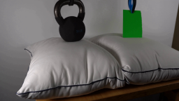
视觉工具实际返回图片 2
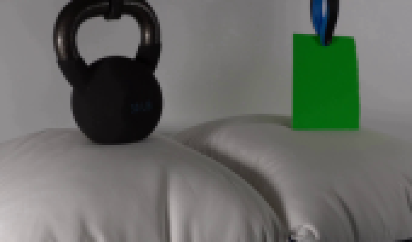
视觉工具实际返回图片 3
视觉工具实际返回图片 4
视觉工具实际返回图片 5
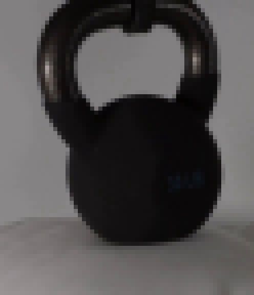
视觉工具实际返回图片 6
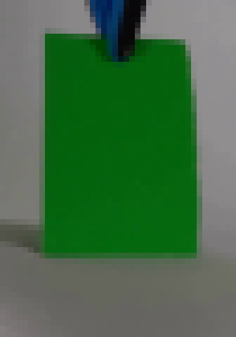
视觉工具实际返回图片 7
视觉工具实际返回图片 8
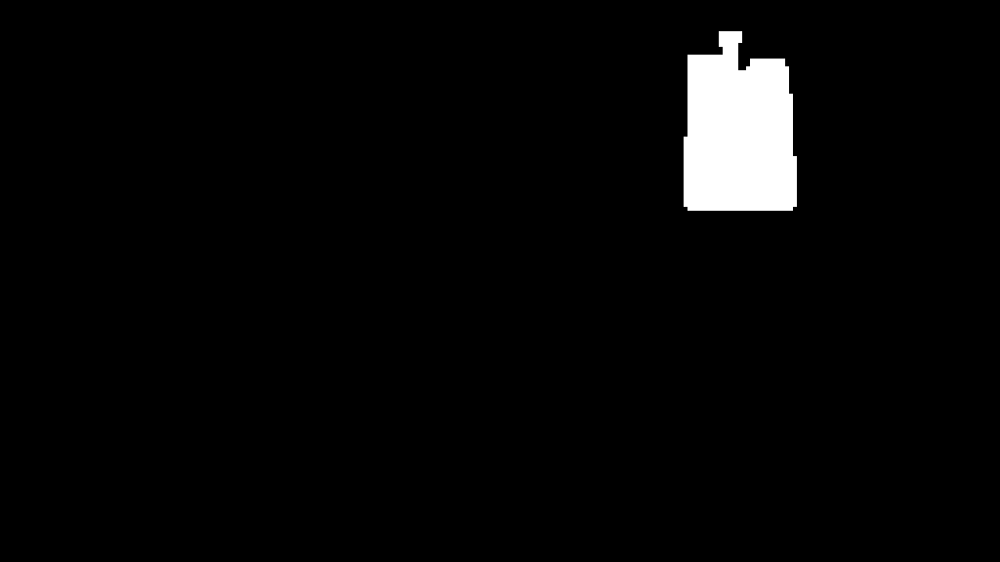
视觉工具实际返回图片 9
视觉工具实际返回图片 10
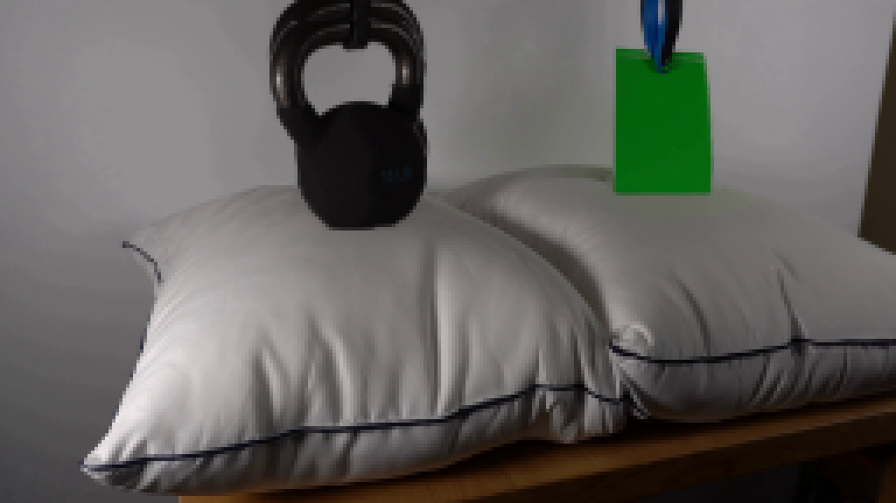
视觉工具实际返回图片 11
视觉工具实际返回图片 12
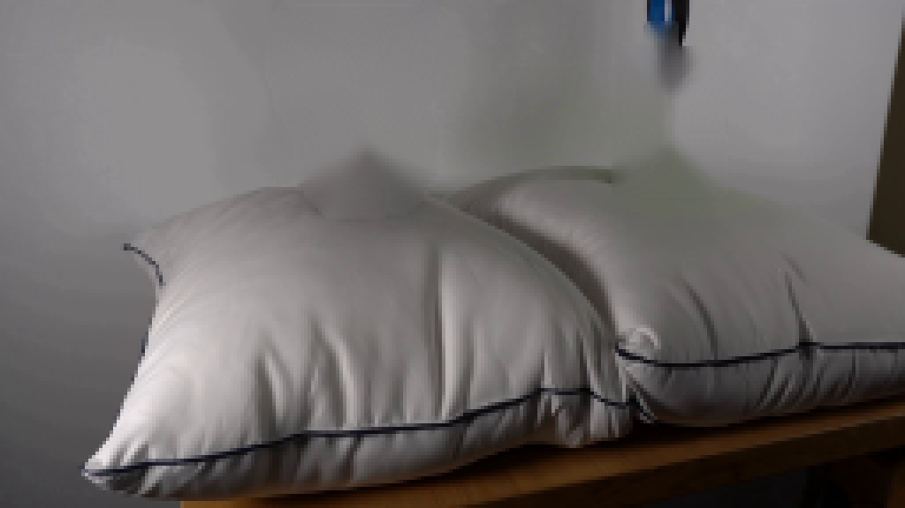
视觉工具实际返回图片 13
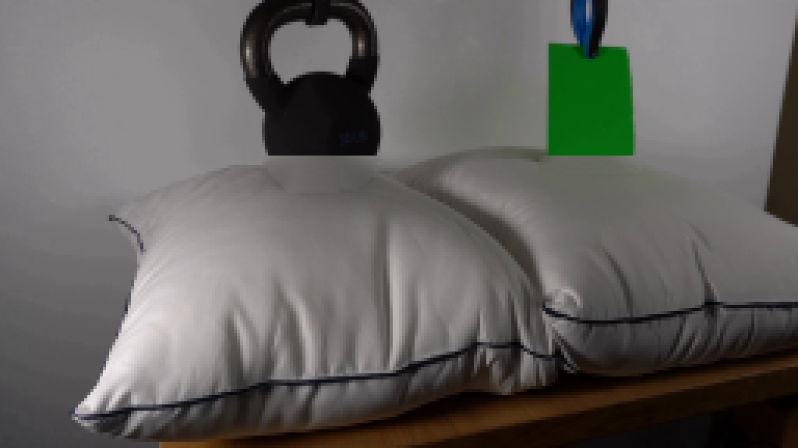
视觉工具实际返回图片 14
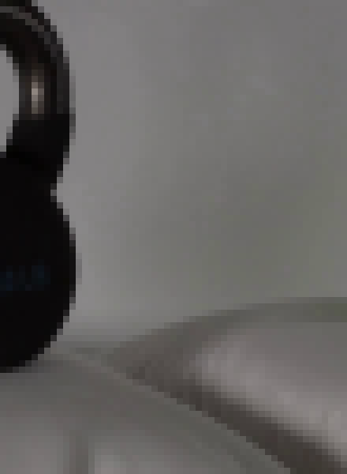
视觉工具实际返回图片 15
视觉工具实际返回图片 16
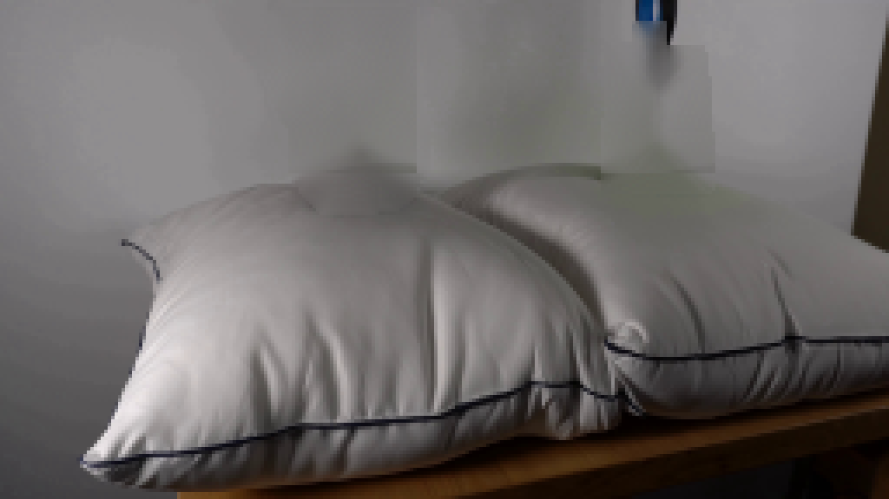
视觉工具实际返回图片 17
视觉工具实际返回图片 18
视觉工具实际返回图片 19

视觉工具实际返回图片 20
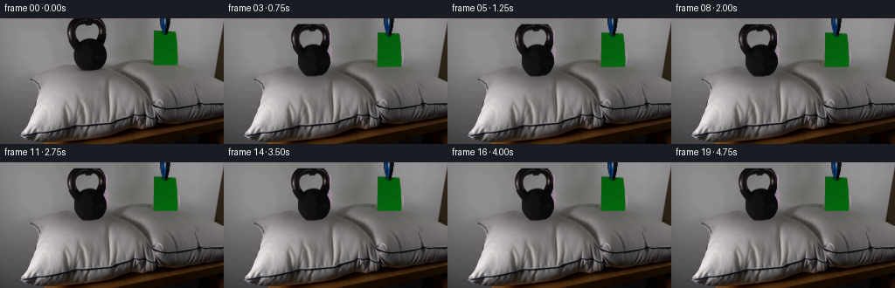
视觉工具实际返回图片 21
视觉工具实际返回图片 22
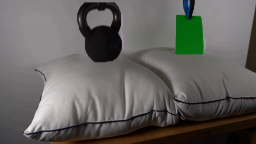
视觉工具实际返回图片 23
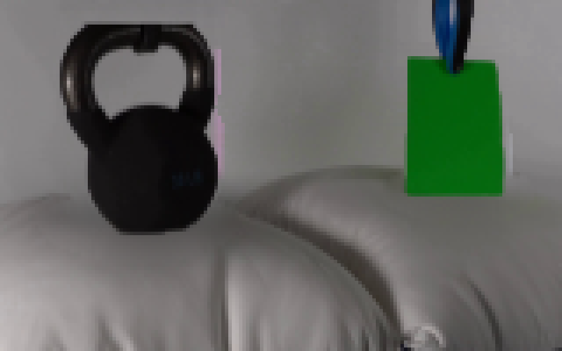
视觉工具实际返回图片 24
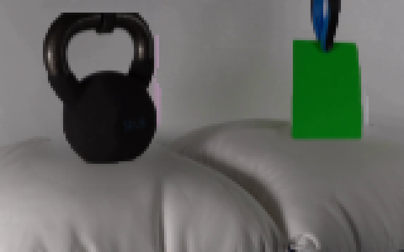
视觉工具实际返回图片 25
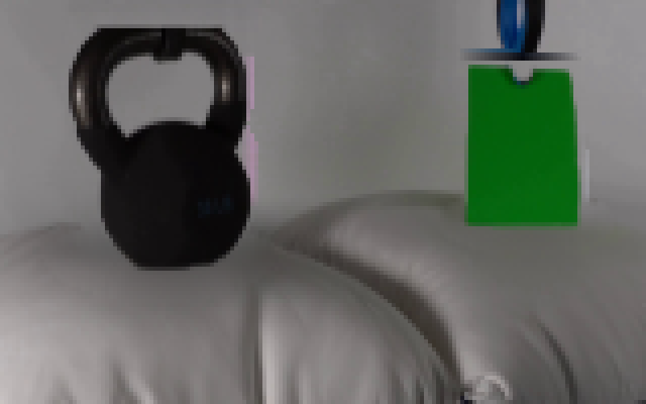
视觉工具实际返回图片 26
视觉工具实际返回图片 27
视觉工具实际返回图片 28

视觉工具实际返回图片 29
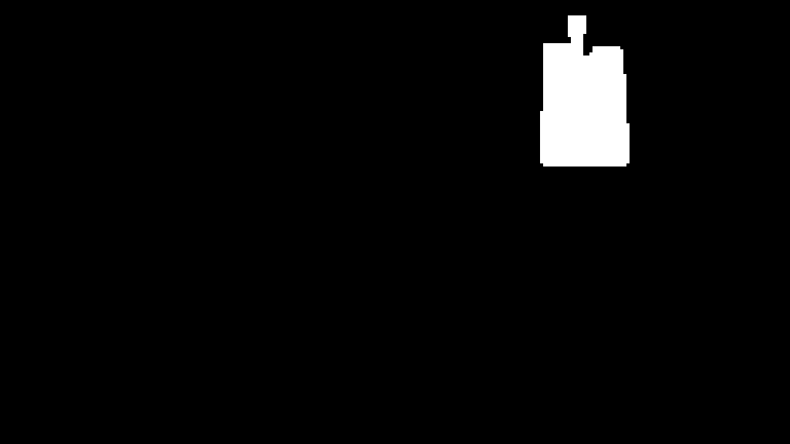
视觉工具实际返回图片 30
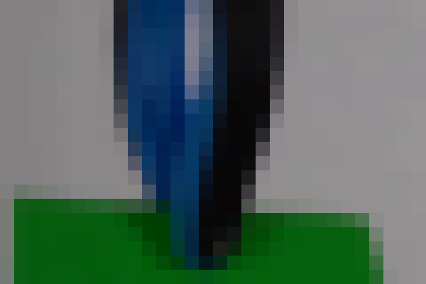
视觉工具实际返回图片 31
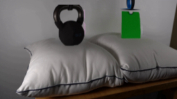
视觉工具实际返回图片 32
视觉工具实际返回图片 33
视觉工具实际返回图片 34

视觉工具实际返回图片 35
视觉工具实际返回图片 36
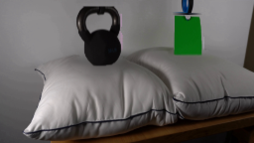
视觉工具实际返回图片 37
视觉工具实际返回图片 38
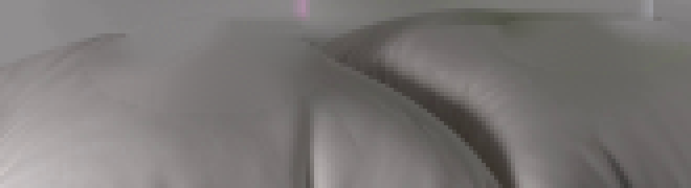
视觉工具实际返回图片 39
视觉工具实际返回图片 40
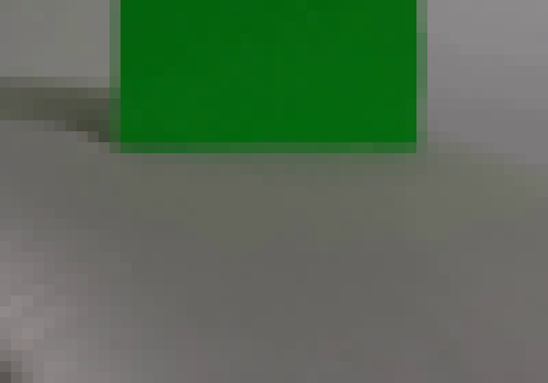
视觉工具实际返回图片 41
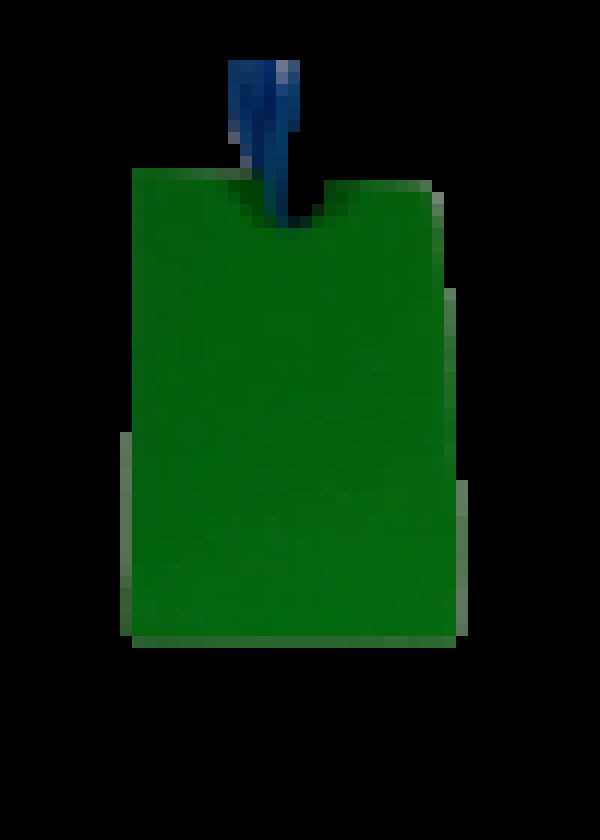
视觉工具实际返回图片 42
视觉工具实际返回图片 43
视觉工具实际返回图片 44
视觉工具实际返回图片 45
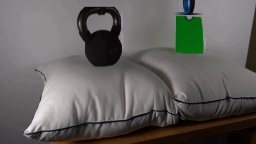
视觉工具实际返回图片 46
视觉工具实际返回图片 47
视觉工具实际返回图片 48
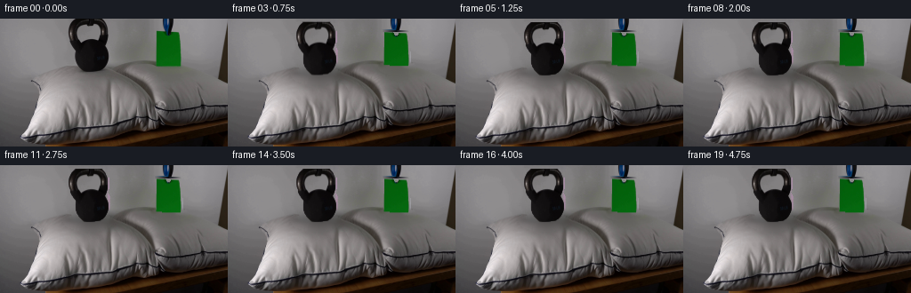
保存候选 8 份；完成命令 90 次；可验证图片返回 48 张。原始 API 响应与完整日志保留在本地。